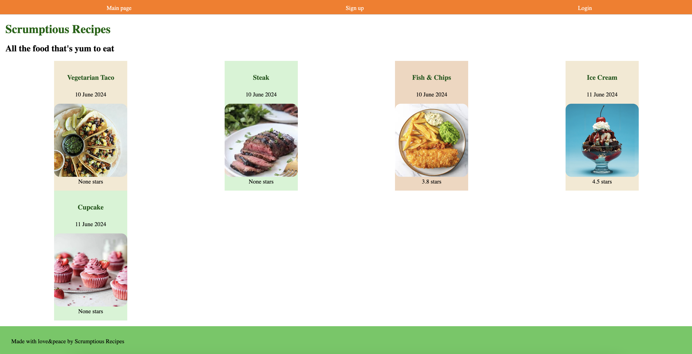
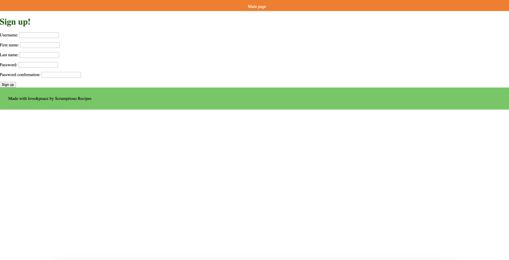
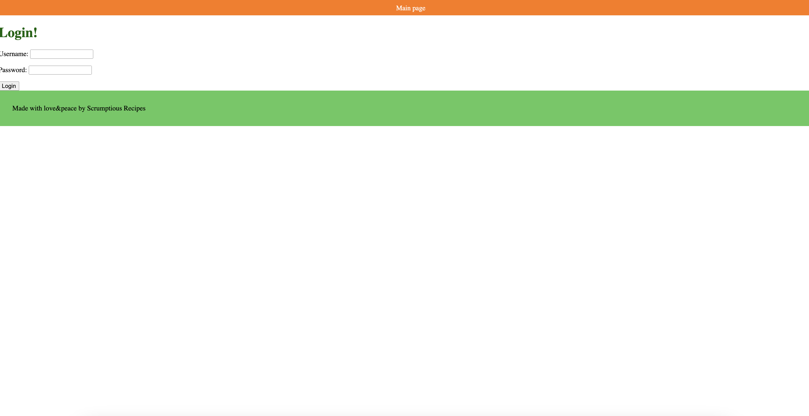
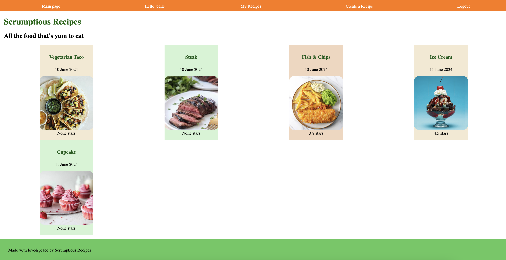
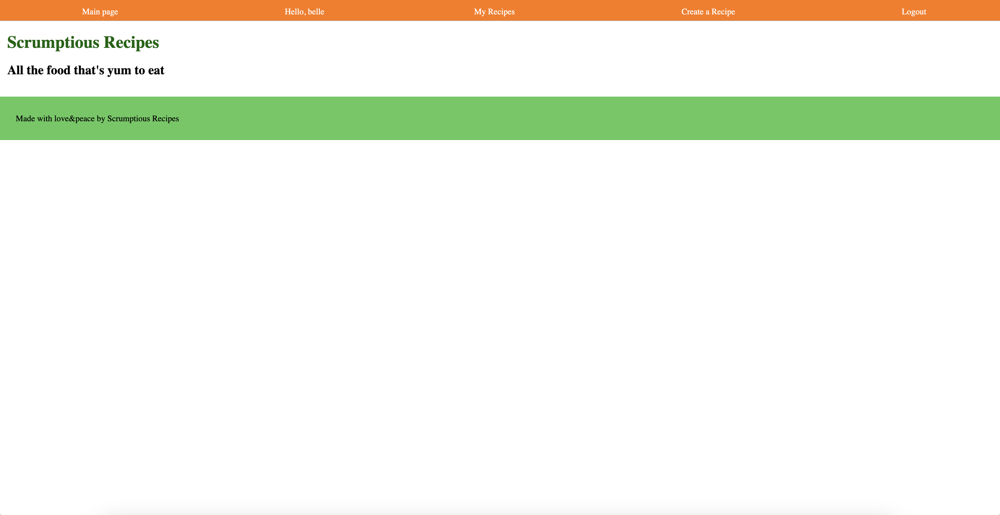
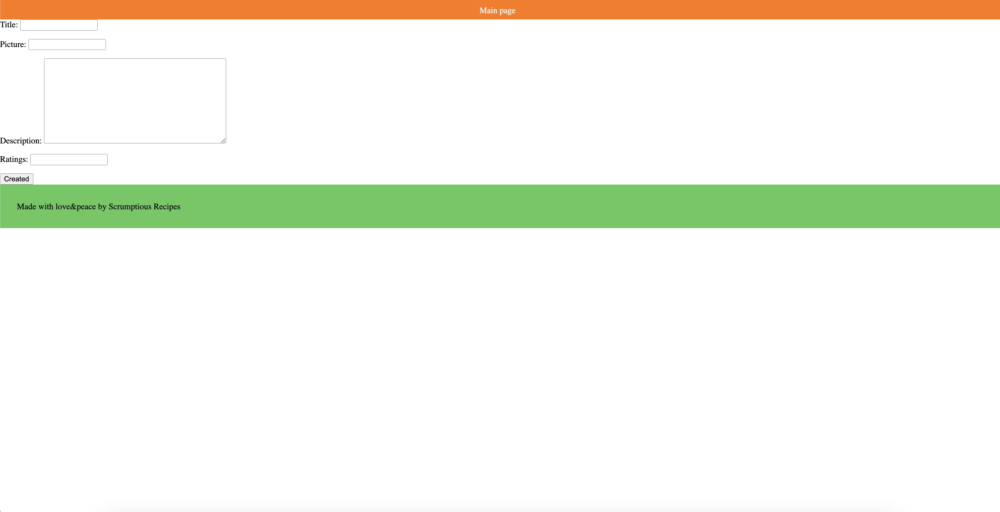
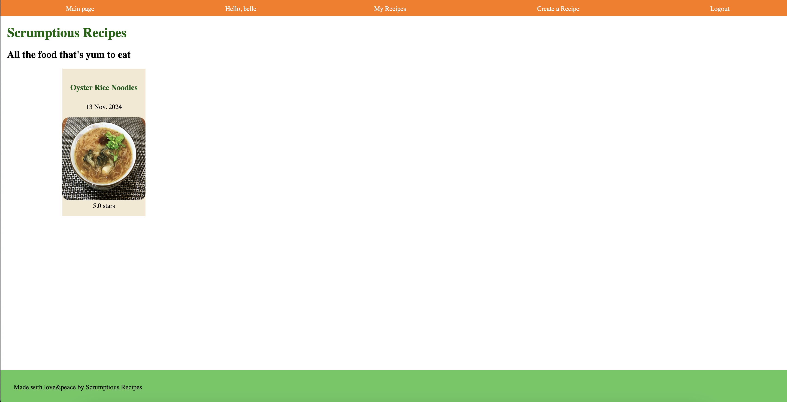

Project: Scrumptious
Click to explore the code
an application for foodies and recipe cravers, exploring and adding various food and recipes between each other. An experiment and practice with django, html and css
Breaking down the features:
after greeting with the home page, the visitors can start by signing up an account with the website. Or, if you already have an account, you can go to the login page to sign in
 once you are signed in, you will be directed back to the main page, which still look the same as a visitor. The difference between a visitor and a member is that, you can create your own recipe and view all the recipes that you have created. Currently in the image below, you have not created any recipe yet
 to create a recipe, you will need to visit the create recipe page, with the name of the dish, image, description and the rating you assign. After creation, you will be directed back to the main page.

At this point when you visit "My Recipe" page, it will show the dish that you have created. When you select the dish and go into the recipe, you will find the details of the dish. There is also an upcoming feature which still developing to input the steps and ingredients needed to cook the food.

- © Untitled
- Design: HTML5 UP